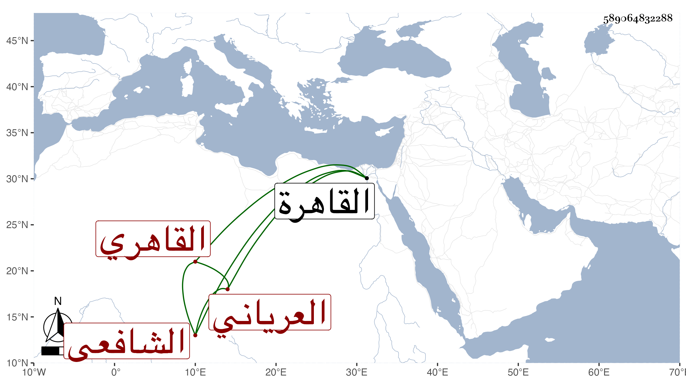

0902Sakhawi.DawLamic.ITO20230111-ara1.EIS1600.589064832288
Biography ID: 589064832288
إبراهيم بن عبد الله بن أحمد بن علي بن محمد بن القسم بن صالح بن هاشم برهان الدين أبو الوفاء بن المحدث الجمال بن الحافظ الشهاب العرياني القاهري الشافعي الآتي أبوه ويعرف كسلفه بالعرياني . ولد في ثامن عشري جمادى الآخرة سنة إحدى وتسعين وسبعمائة بالقاهرة ونشأ بها فحفظ القرآن وتلاه لأبي عمرو على الشمس الزراتيتي وحفظ كتبا في العلوم وأخذ الفقه عن الشموس الثلاثة البرماوي والشطنوفي والغراقي والبرهان البيجوري وقريبيه الشمس والنور وعن الشطنوفي مع البدر الدماميني أخذ العربية وعن البرماوي أخذها هي والأصول بل قرأ عليه شرحه على العمدة أو غالبه وكذا أخذ العربية والأصول عن المجد البرماوي وحضر بأخرة عند القاياتي في العضد وغيره وعلم الحديث عن الولي العراقي وشيخنا وانتفع في ابتدائه في النحو والفقه والحديث بوالده الجمال بل اعتنى به أبوه فأحضره على التقي بن حاتم والشهاب بن المنقر والصلاح الزفتاوي والتاج الصردي والنجم ابن الكشك والسراج الكومي والزينين ابن الشيخة والمراغي والتقي الدجوي وستيتة ابنة ابن غالي وأسمعه على التنوخي وابن أبي المجد والبلقيني والعراقي والهيثمي والصدر المناوي والحلاوي والسويداوي والشرف أبي بكر بن جماعة والنجم البالسي والشهاب أحمد بن عبد الله ابن رشيد السلمي الحجازي الحنفي ومريم الاذرعية في آخرين من الصنفين وأجاز له أبو هريرة بن الذهبي وابن العلائي وخلق وهو مكثر سماعا وشيوخا . وحج مرتين الأولى في سنة ثمان وعشرين ولزم الاشتغال حتى برع وصار يعد في الفضلاء مع الذكاء المفرط والمذاكرة بكثير من الحكايات والنوادر والأشعار والفوائد الجمة وناب في القضاء عن شيخنا ومن قبله عن البلقيني وهو كان قارىء الحديث عنده في رمضان وجمع شرح شواهد الكافية الشافية لابن ملك كما رأيته بخط شيخنا وهو شرح حسن يدل على اطلاع زائد في النحو وغيره وحفظ غزير للحديث والاشعار العربية والأمثال وليس بكثير عليه وان زعم بعضهم أنه وجد بتركة المقريزي شرحها للغماري فان كان وقف عليه فيمكن أن يكون أخذه وزاد عليه وولي مشيخة العلائي طيبغا الطويل المعروفة بالطويلية بالصحراء وظيفة أبيه وجده وتنزل في صوفية البيبرسية وغيرها من الجهات ولكنه مع هذه الأوصاف الشريفة ضيع نفسه بكثرة إسرافه على نفسه ومجاهرته بالمعاصي بحيث شوهد منه العجب من ذلك وأفضى به الحال إلى أن سقط في البحر وهو ثمل فيما قيل يوم الخميس سابع عشري رجب سنة اثنتين وخمسين فغرق ولم يوجد ثم وجد في مستهل شعبان فغسل من الغد ودفن بعد أن تغيرت رائحته واستقر بعده في الطويلية أبو الخير بن النحاس وزعم صاحبنا التقى القلقشندي أن شيخنا كان استقر به فيها لتجاهره بما أشرت إليه فالله أعلم وقد حدث باليسير وأخذ عنه أصحابنا وحملني شره الطالب على أن قرأت عليه جزءا وليس بأهل للرواية عنه ولا كرامه سامحه الله وعفا عنه .
